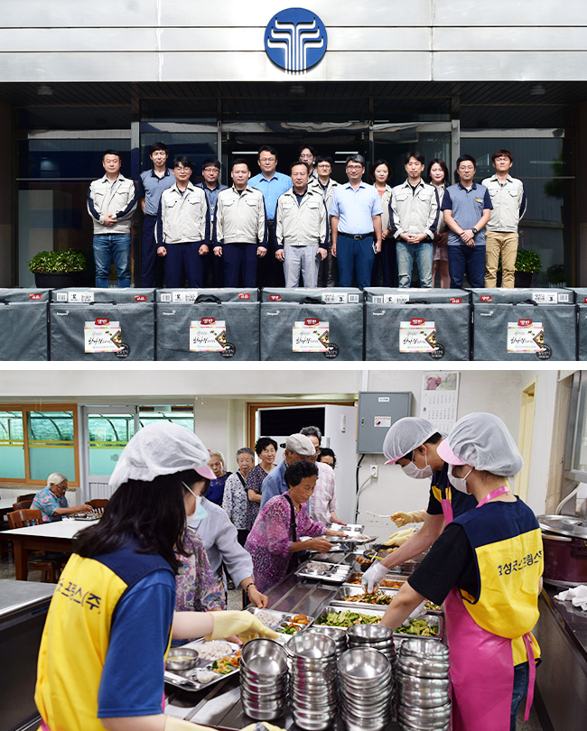

사랑의 헌혈 행사
효성굿스프링스는 정기적으로 임직원이 참여하는 사랑의 헌혈 행사를 실시하여 생명나눔에 동참하고 있습니다. 임직원들이 헌혈한 혈액과 기부한 헌혈증서는 한국백혈병소아암협회 등에 전달하여 수혈이 필요한 이들을 위해 사용되고 있습니다.

지역 저소득층 지원활동
효성굿스프링스는 창원시에 거주하는 기초수급자와 독거노인 등 어려운 이웃을 매년 방문하여 명절에는 생필품 선물세트를 전달하고, 연말에는 '사랑의 김치, 쌀 나누기' 봉사활동을 실시하는 등 지역사회 일원으로써 활발한 나눔활동을 펼치고 있습니다.
지역 아동센터 봉사활동
효성굿스프링스는 정기적으로 임직원이 참여하는 사랑의 헌혈 행사를 실시하여 생명나눔에 동참하고 있습니다. 임직원들이 헌혈한 혈액과 기부한 헌혈증서는 한국백혈병소아암협회 등에 전달하여 수혈이 필요한 이들을 위해 사용되고 있습니다.
지역 중증장애인 봉사활동
사내 봉사 동호회인 천사회를 중심으로 창원시 장애인종합복지관의 거동이 불편한 중증 장애인분들을 모시고 매년 문화체험 활동을 진행하고 있습니다. 효성굿스프링스는 앞으로도 지속적인 봉사활동을 이어 나갈 예정입니다.